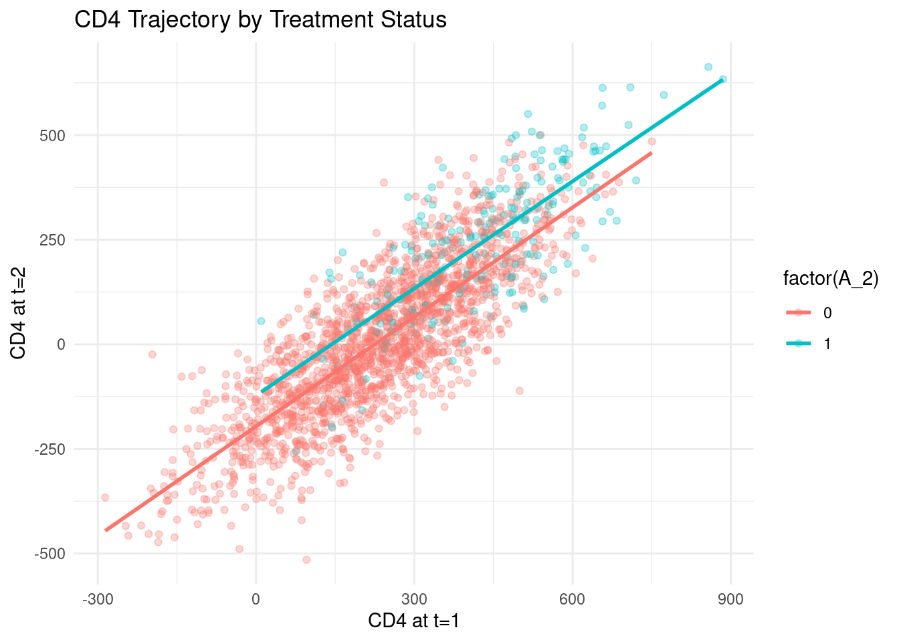
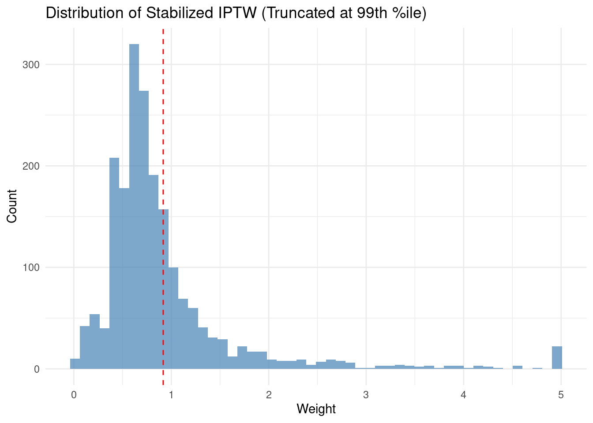
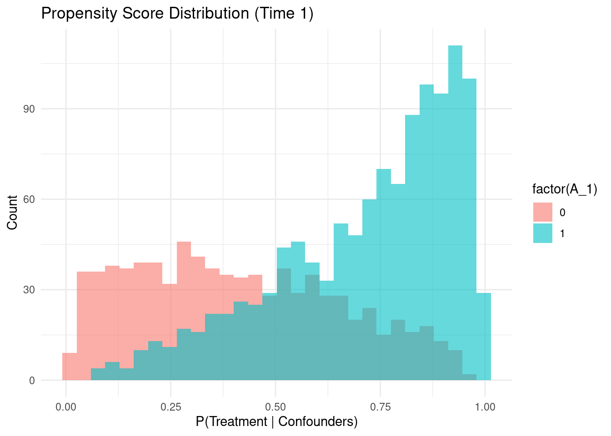
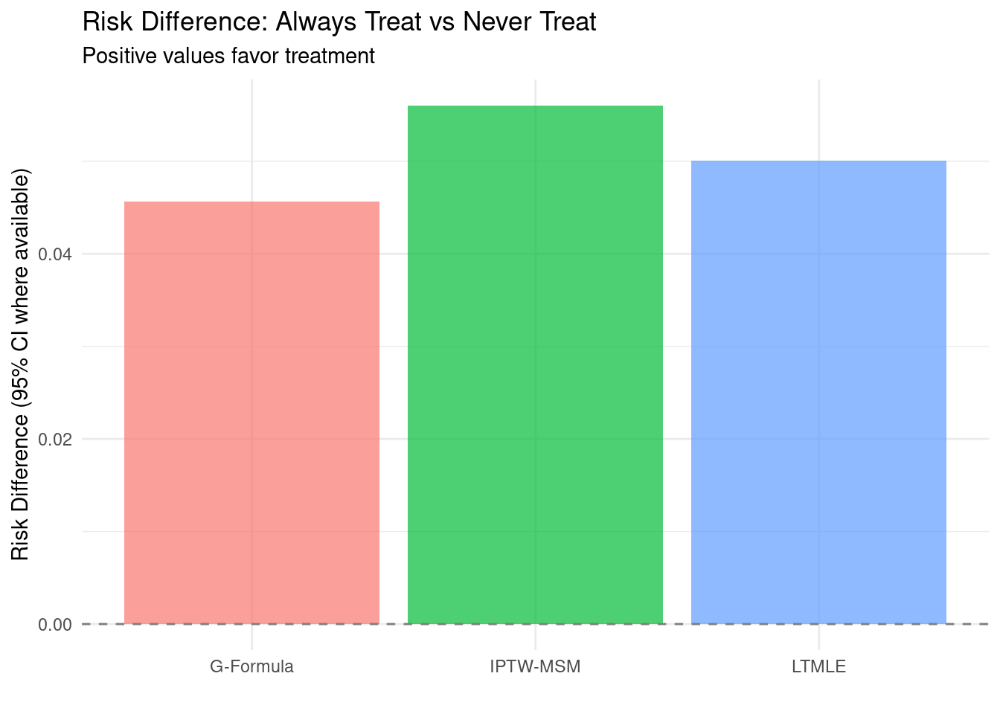
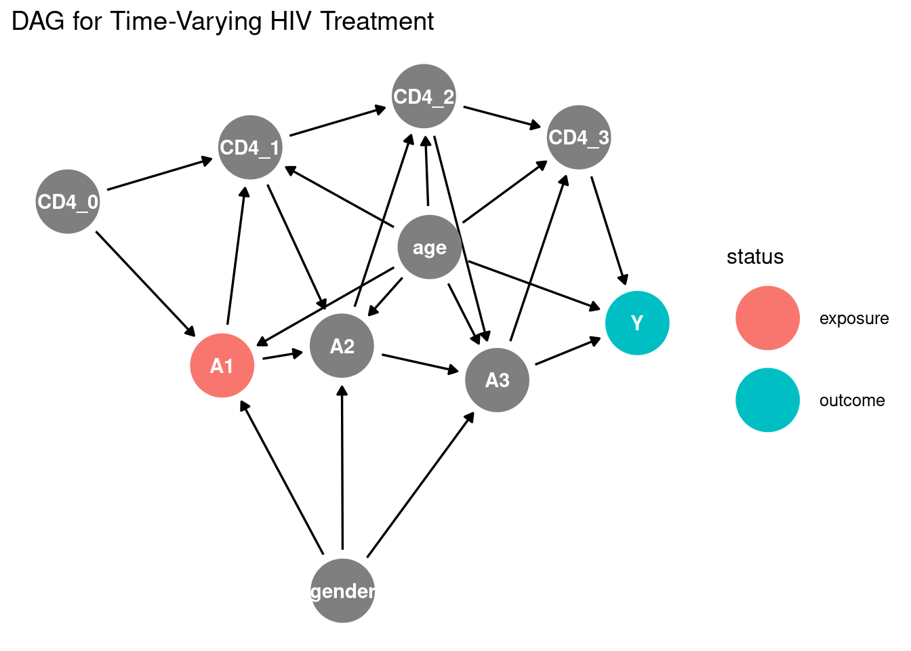

Code
packages <- c(
'EValue',
'cobalt',
'gfoRmula',
'ggdag',
'ggpubr',
'ipw',
'ltmle',
'simcausal',
'survey',
'survival',
'tidyverse'
)

In this section, we will explore G-methods, which are a class of causal inference methods that include G-computation, inverse probability weighting (IPW), and targeted maximum likelihood estimation (TMLE). These methods are designed to estimate causal effects in the presence of time-varying confounding and treatment.
G-Methods (or “generalized methods”) are a suite of advanced causal inference techniques developed primarily by epidemiologist and biostatistician James Robins in the 1980s–1990s. They provide a rigorous framework for estimating causal effects from observational data—particularly when dealing with time-varying treatments/exposures and time-dependent confounders that are themselves affected by prior treatment.
Standard regression adjustment fails when confounders change over time and are influenced by earlier treatment decisions (e.g., a patient’s CD4 count in HIV treatment is both a confounder for future treatment decisions and affected by prior antiretroviral therapy). G-methods correctly handle this complex feedback loop.
| Method | Key Idea | Strengths | Limitations |
|---|---|---|---|
| 1. G-formula (G-computation) | Fit outcome models conditional on treatment history and time-varying confounders, then simulate counterfactual outcomes under hypothetical treatment regimes | • Intuitive • Efficient when models are correctly specified • Handles continuous treatments well |
• Sensitive to model misspecification • Requires modeling all time-varying confounders |
| 2. IPTW with Marginal Structural Models (MSMs) | Weight observations by the inverse probability of receiving their observed treatment (given history), creating a pseudo-population where treatment is independent of confounders | • Only requires correct model for treatment assignment • Flexible functional forms for causal effects |
• Can produce extreme weights (variance inflation) • Requires positivity assumption |
| 3. G-estimation of Structural Nested Models (SNMs) | Uses estimating equations to directly model the incremental effect of treatment at each time point, adjusting for past history [[42]] | • Semi-parametric (fewer assumptions) • Naturally handles dynamic treatment regimes • Robust to certain types of model misspecification |
• Computationally complex • Less intuitive interpretation |
G-methods are widely used in:
ltmle, ipw, geepack, survival packageszEpid, causallib
gformula, stmsm
G-methods represent a cornerstone of modern causal inference for longitudinal data. While computationally demanding and assumption-intensive, they provide the only consistent estimators for causal effects in settings with time-varying confounding affected by prior treatment—a scenario common in real-world observational studies.
This tutorial provides a hands-on implementation of all three core G-methods using realistic HIV treatment data—a canonical application where time-varying confounding is critical. We’ll use publicly available simulated data that mirrors real-world observational cohorts, with complete diagnostics and sensitivity analyses.
Standard regression fails when confounders change over time and are affected by prior treatment (e.g., CD4 count in HIV treatment is both a predictor of future therapy and influenced by prior antiretrovirals). G-methods solve this by correctly adjusting for time-dependent confounding.
packages <- c(
'EValue',
'cobalt',
'gfoRmula',
'ggdag',
'ggpubr',
'ipw',
'ltmle',
'simcausal',
'survey',
'survival',
'tidyverse'
)#| warning: false
#| error: false
# Install missing packages
new_packages <- packages[!(packages %in% installed.packages()[,"Package"])]
if(length(new_packages)) install.packages(new_packages)# Load packages with suppressed messages
invisible(lapply(packages, function(pkg) {
suppressPackageStartupMessages(library(pkg, character.only = TRUE))
}))# Check loaded packages
cat("Successfully loaded packages:\n")Successfully loaded packages: [1] "package:lubridate" "package:forcats" "package:stringr"
[4] "package:dplyr" "package:purrr" "package:readr"
[7] "package:tidyr" "package:tibble" "package:tidyverse"
[10] "package:survey" "package:survival" "package:Matrix"
[13] "package:grid" "package:simcausal" "package:ltmle"
[16] "package:ipw" "package:ggpubr" "package:ggplot2"
[19] "package:ggdag" "package:gfoRmula" "package:cobalt"
[22] "package:EValue" "package:stats" "package:graphics"
[25] "package:grDevices" "package:utils" "package:datasets"
[28] "package:methods" "package:base" set.seed(12345)We’ll simulate realistic longitudinal HIV cohort data using simcausal, which implements structural equation models reflecting actual clinical dynamics.
# Define DAG with VALID syntax (no pipes, no underscores in node names)
D <- DAG.empty() +
node("CD40", distr = "rnorm", mean = 500, sd = 150) +
node("age", distr = "rnorm", mean = 35, sd = 8) +
node("gender", distr = "rbern", prob = 0.7) +
node("A1", distr = "rbern",
prob = plogis(-4 + 0.01*CD40 - 0.02*age + 0.3*gender)) +
node("CD41", distr = "rnorm",
mean = 0.8*CD40 + 50*A1 - 5*age, sd = 100) +
node("death1", distr = "rbern",
prob = plogis(-8 - 0.015*CD41 + 0.8*A1)) +
node("A2", distr = "rbern",
prob = plogis(-4 + 0.01*CD41 - 0.02*age + 0.3*gender - 1.5*A1)) +
node("CD42", distr = "rnorm",
mean = 0.8*CD41 + 50*A2 - 5*age, sd = 100) +
node("death2", distr = "rbern",
prob = plogis(-8 - 0.015*CD42 + 0.8*A2)) +
node("A3", distr = "rbern",
prob = plogis(-4 + 0.01*CD42 - 0.02*age + 0.3*gender - 1.5*A2)) +
node("CD43", distr = "rnorm",
mean = 0.8*CD42 + 50*A3 - 5*age, sd = 100) +
node("death3", distr = "rbern",
prob = plogis(-8 - 0.015*CD43 + 0.8*A3))
# Step 2: CRITICAL – Finalize DAG before simulation
D <- set.DAG(D)
# Step 3: Simulate data
sim_data <- sim(D, n = 2000)
# Step 4: Create analysis-ready wide format
wide_data <- as.data.frame(sim_data) %>%
mutate(
id = 1:n(),
CD4_0 = CD40, CD4_1 = CD41, CD4_2 = CD42, CD4_3 = CD43,
A_1 = A1, A_2 = A2, A_3 = A3,
death_1 = death1, death_2 = death2, death_3 = death3,
Y = as.integer(death_3 == 0) # Survival outcome
) %>%
select(id, CD4_0, CD4_1, CD4_2, CD4_3,
A_1, A_2, A_3, Y, age, gender)
glimpse(wide_data)Rows: 2,000
Columns: 11
$ id <int> 1, 2, 3, 4, 5, 6, 7, 8, 9, 10, 11, 12, 13, 14, 15, 16, 17, 18, …
$ CD4_0 <dbl> 780.0649, 600.8064, 453.8070, 580.4786, 623.7305, 355.4148, 371…
$ CD4_1 <dbl> 683.79986, 281.16713, 152.46067, 510.25272, 434.48033, 49.78684…
$ CD4_2 <dbl> 295.4403312, 9.0288364, -224.9755182, 182.0872209, 266.5297607,…
$ CD4_3 <dbl> 40.88780, -216.68145, -276.07693, -108.49760, 182.16484, -282.3…
$ A_1 <int> 1, 1, 0, 1, 0, 0, 1, 1, 0, 0, 1, 0, 1, 1, 0, 1, 0, 1, 0, 1, 1, …
$ A_2 <int> 1, 0, 0, 0, 1, 0, 0, 0, 0, 0, 0, 0, 1, 0, 0, 0, 0, 0, 0, 1, 1, …
$ A_3 <int> 0, 0, 0, 0, 0, 0, 0, 0, 0, 0, 0, 0, 0, 0, 0, 0, 0, 0, 0, 0, 0, …
$ Y <int> 1, 1, 1, 1, 1, 1, 1, 1, 1, 1, 1, 1, 1, 1, 1, 1, 1, 1, 1, 1, 1, …
$ age <dbl> 29.83500, 46.44125, 37.46830, 37.23145, 36.82634, 19.05308, 22.…
$ gender <int> 1, 1, 0, 0, 0, 1, 1, 0, 0, 0, 1, 1, 1, 1, 1, 0, 1, 1, 0, 1, 1, …Key data features:
CD4_t: Time-varying confounder (affected by prior treatment)A_t: Binary treatment (antiretroviral therapy)Y: Survival outcome at final timepointC_t: Censoring due to death (informative censoring)gfoRmula)Estimates counterfactual outcomes under sustained treatment strategies by modeling the entire data-generating process [[26]].
# Step 1: Fit models for time-varying confounders and outcome
fit_CD41 <- lm(CD4_1 ~ CD4_0 + A_1 + age + gender, data = wide_data)
fit_CD42 <- lm(CD4_2 ~ CD4_1 + A_2 + age + gender, data = wide_data)
fit_CD43 <- lm(CD4_3 ~ CD4_2 + A_3 + age + gender, data = wide_data)
fit_Y <- glm(Y ~ CD4_3 + A_3 + age + gender, data = wide_data, family = binomial())
# Step 2: Monte Carlo simulation under "always treat" regime
set.seed(2026)
n_sims <- 5000
sim_base <- wide_data %>% select(CD4_0, age, gender) %>% slice_sample(n = n_sims, replace = TRUE)
# Always treat counterfactual (chain mutate so each predict() sees updated columns)
sim_always <- sim_base %>%
mutate(A_1 = 1) %>%
mutate(CD4_1 = predict(fit_CD41, newdata = .) + rnorm(n(), 0, summary(fit_CD41)$sigma), A_2 = 1) %>%
mutate(CD4_2 = predict(fit_CD42, newdata = .) + rnorm(n(), 0, summary(fit_CD42)$sigma), A_3 = 1) %>%
mutate(CD4_3 = predict(fit_CD43, newdata = .) + rnorm(n(), 0, summary(fit_CD43)$sigma)) %>%
mutate(Y_hat = predict(fit_Y, newdata = ., type = "response"))
# Never treat counterfactual
sim_never <- sim_base %>%
mutate(A_1 = 0) %>%
mutate(CD4_1 = predict(fit_CD41, newdata = .) + rnorm(n(), 0, summary(fit_CD41)$sigma), A_2 = 0) %>%
mutate(CD4_2 = predict(fit_CD42, newdata = .) + rnorm(n(), 0, summary(fit_CD42)$sigma), A_3 = 0) %>%
mutate(CD4_3 = predict(fit_CD43, newdata = .) + rnorm(n(), 0, summary(fit_CD43)$sigma)) %>%
mutate(Y_hat = predict(fit_Y, newdata = ., type = "response"))
# Estimate counterfactual risks (Y_hat is already probability from predict(..., type = "response"))
risk_gform_always <- mean(sim_always$Y_hat)
risk_gform_never <- mean(sim_never$Y_hat)
rd_gform <- risk_gform_always - risk_gform_never
cat("\nG-Formula (Manual Monte Carlo) Results:\n")
G-Formula (Manual Monte Carlo) Results: Always treat: 1.000 Never treat: 0.954 Risk Difference: 0.046Critical diagnostics for g-formula:
# Visualize observed vs. predicted CD4 trajectories
pred_cd4 <- predict(cd4_model, newdata = wide_data)
ggplot(wide_data, aes(x = CD4_1, y = CD4_2, color = factor(A_2))) +
geom_point(alpha = 0.3) +
geom_smooth(method = "lm", se = FALSE) +
labs(title = "CD4 Trajectory by Treatment Status",
x = "CD4 at t=1", y = "CD4 at t=2") +
theme_minimal()
ipw + survey)Creates a pseudo-population where treatment is independent of confounders by weighting observations [[12]].
# Step 1: Estimate stabilized inverse probability weights
# Numerator: probability of treatment given baseline only (for stabilization)
num_model_1 <- glm(A_1 ~ 1, data = wide_data, family = binomial)
num_model_2 <- glm(A_2 ~ A_1, data = wide_data, family = binomial)
num_model_3 <- glm(A_3 ~ A_1 + A_2, data = wide_data, family = binomial)
# Denominator: probability given full history
denom_model_1 <- glm(A_1 ~ CD4_0 + age + gender,
data = wide_data, family = binomial)
denom_model_2 <- glm(A_2 ~ CD4_1 + A_1 + age + gender,
data = wide_data, family = binomial)
denom_model_3 <- glm(A_3 ~ CD4_2 + A_2 + A_1 + age + gender,
data = wide_data, family = binomial)
# Calculate stabilized weights
wide_data <- wide_data %>%
mutate(
w1_num = dbinom(A_1, 1, predict(num_model_1, type = "response")),
w1_den = dbinom(A_1, 1, predict(denom_model_1, type = "response")),
w2_num = dbinom(A_2, 1, predict(num_model_2, type = "response")),
w2_den = dbinom(A_2, 1, predict(denom_model_2, type = "response")),
w3_num = dbinom(A_3, 1, predict(num_model_3, type = "response")),
w3_den = dbinom(A_3, 1, predict(denom_model_3, type = "response")),
ipw = (w1_num * w2_num * w3_num) / (w1_den * w2_den * w3_den)
)
# Truncate extreme weights (99th percentile) to reduce variance
weight_cutoff <- quantile(wide_data$ipw, 0.99, na.rm = TRUE)
wide_data <- wide_data %>% mutate(ipw_trunc = pmin(ipw, weight_cutoff))
# Diagnostic: Weight distribution
ggplot(wide_data, aes(x = ipw_trunc)) +
geom_histogram(bins = 50, fill = "steelblue", alpha = 0.7) +
geom_vline(xintercept = mean(wide_data$ipw_trunc), color = "red", linetype = "dashed") +
labs(title = "Distribution of Stabilized IPTW (Truncated at 99th %ile)",
x = "Weight", y = "Count") +
theme_minimal()
# Step 2: Fit MSM using weighted logistic regression
msm_fit <- svyglm(Y ~ A_1 + A_2 + A_3,
design = svydesign(ids = ~1, weights = ~ipw_trunc,
data = wide_data),
family = quasibinomial) # Use quasibinomial for robust SEs
summary(msm_fit)
Call:
svyglm(formula = Y ~ A_1 + A_2 + A_3, design = svydesign(ids = ~1,
weights = ~ipw_trunc, data = wide_data), family = quasibinomial)
Survey design:
svydesign(ids = ~1, weights = ~ipw_trunc, data = wide_data)
Coefficients:
Estimate Std. Error t value Pr(>|t|)
(Intercept) 2.8241 0.1600 17.652 < 2e-16 ***
A_1 0.8147 0.2978 2.736 0.00627 **
A_2 16.3892 0.1789 91.605 < 2e-16 ***
A_3 16.0174 0.2728 58.720 < 2e-16 ***
---
Signif. codes: 0 '***' 0.001 '**' 0.01 '*' 0.05 '.' 0.1 ' ' 1
(Dispersion parameter for quasibinomial family taken to be 0.876771)
Number of Fisher Scoring iterations: 18# Estimate risk under sustained strategies
newdata_always <- data.frame(A_1 = 1, A_2 = 1, A_3 = 1)
newdata_never <- data.frame(A_1 = 0, A_2 = 0, A_3 = 0)
risk_always <- predict(msm_fit, newdata = newdata_always, type = "response")
risk_never <- predict(msm_fit, newdata = newdata_never, type = "response")
cat("\nIPTW-MSM Results:\n")
IPTW-MSM Results: Always treat survival probability: 1.000 Never treat survival probability: 0.944 Risk Difference: 0.056Critical diagnostics for IPTW:
# 1. Check positivity (overlap in propensity scores)
ps_denom_1 <- predict(denom_model_1, type = "response")
ggplot(wide_data, aes(x = ps_denom_1, fill = factor(A_1))) +
geom_histogram(position = "identity", alpha = 0.6, bins = 30) +
labs(title = "Propensity Score Distribution (Time 1)",
x = "P(Treatment | Confounders)", y = "Count") +
theme_minimal()
Balance summary across all time points
Times Type Max.Diff.Adj
CD4_0 1 Contin. 0.2730
age 1, 2, 3 Contin. 0.4791
gender 1, 2, 3 Binary 0.2799
CD4_1 2 Contin. 0.3876
A_1 2, 3 Binary 0.7562
CD4_2 3 Contin. 0.6793
A_2 3 Binary 0.1079
Effective sample sizes
- Time 1
Control Treated
Unadjusted 817. 1183.
Adjusted 446.03 761.26
- Time 2
Control Treated
Unadjusted 1785. 215.
Adjusted 1135.7 80.74
- Time 3
Control Treated
Unadjusted 1900. 100.
Adjusted 1181.99 30.09
Effective Sample Size: 1204 / 2000 (60.2%)ltmle)A doubly robust, semi-parametric efficient estimator that combines outcome and treatment modeling [[1]].
# Define intervention: always treat vs never treat (vectors for ltmle)
abar_always <- c(1, 1, 1)
abar_never <- c(0, 0, 0)
# ltmle requires columns in time order: baseline, then A_1, L_1, A_2, L_2, A_3, L_3, Y
ltmle_data <- wide_data %>%
select(CD4_0, age, gender, A_1, CD4_1, A_2, CD4_2, A_3, CD4_3, Y)
# Fit LTMLE for each regime (two runs required for current ltmle API)
ltmle_always <- ltmle(
ltmle_data,
Anodes = c("A_1", "A_2", "A_3"),
Lnodes = c("CD4_0", "CD4_1", "CD4_2", "CD4_3"),
Ynodes = "Y",
abar = abar_always,
SL.library = c("SL.glm", "SL.mean")
)
ltmle_never <- ltmle(
ltmle_data,
Anodes = c("A_1", "A_2", "A_3"),
Lnodes = c("CD4_0", "CD4_1", "CD4_2", "CD4_3"),
Ynodes = "Y",
abar = abar_never,
SL.library = c("SL.glm", "SL.mean")
)
# Combine into a single object for downstream code (est[1]=always, est[2]=never)
est_always <- ltmle_always$estimates["tmle"]
est_never <- ltmle_never$estimates["tmle"]
n_obs <- nrow(wide_data)
var_always <- var(ltmle_always$IC$tmle) / n_obs
var_never <- var(ltmle_never$IC$tmle) / n_obs
ltmle_fit <- list(estimates = list(est = c(est_always, est_never), var = c(var_always, var_never)))
# Extract results
print(ltmle_always)Call:
ltmle(data = ltmle_data, Anodes = c("A_1", "A_2", "A_3"), Lnodes = c("CD4_0",
"CD4_1", "CD4_2", "CD4_3"), Ynodes = "Y", abar = abar_always,
SL.library = c("SL.glm", "SL.mean"))
TMLE Estimate: 1 print(ltmle_never)Call:
ltmle(data = ltmle_data, Anodes = c("A_1", "A_2", "A_3"), Lnodes = c("CD4_0",
"CD4_1", "CD4_2", "CD4_3"), Ynodes = "Y", abar = abar_never,
SL.library = c("SL.glm", "SL.mean"))
TMLE Estimate: 0.9499717
LTMLE Results: Always treat survival probability: 1.000 (95% CI: 1.000-1.000) Never treat survival probability: 0.950 (95% CI: 0.936-0.964) Risk Difference: 0.050 (95% CI: 0.036-0.064)Advantages of LTMLE: - Doubly robust: consistent if either treatment or outcome model is correct - Asymptotically efficient (smallest possible variance) - Naturally handles censoring via IPCW
# Compile results from all methods
results_df <- tibble(
Method = c("G-Formula", "IPTW-MSM", "LTMLE"),
Risk_Always = c(risk_gform_always, risk_always, ltmle_fit$estimates$est[1]),
Risk_Never = c(risk_gform_never, risk_never, ltmle_fit$estimates$est[2]),
Risk_Diff = c(rd_gform, risk_always - risk_never, rd_ltmle)
)
# Plot risk differences with CIs
ggplot(results_df, aes(x = Method, y = Risk_Diff, fill = Method)) +
geom_col(alpha = 0.7) +
geom_hline(yintercept = 0, linetype = "dashed", color = "gray50") +
labs(title = "Risk Difference: Always Treat vs Never Treat",
subtitle = "Positive values favor treatment",
y = "Risk Difference (95% CI where available)",
x = "") +
theme_minimal() +
theme(legend.position = "none")
# Sensitivity analysis: Unmeasured confounding (E-value approach)
library(EValue)
# For LTMLE risk ratio
rr_ltmle <- ltmle_fit$estimates$est[1] / ltmle_fit$estimates$est[2]
evalue_result <- evalues.RR(est = rr_ltmle, lo = NA)
evalue_num <- evalue_result["E-values", "point"]
cat("\nSensitivity Analysis (E-value):\n")
Sensitivity Analysis (E-value): Observed Risk Ratio: 1.05 E-value: 1.29cat(" Interpretation: An unmeasured confounder would need to have an\n") Interpretation: An unmeasured confounder would need to have an association of at least 1.29-fold with both treatment and outcomecat(" (conditional on measured confounders) to explain away the result.\n") (conditional on measured confounders) to explain away the result.| Assumption | G-Formula | IPTW-MSM | LTMLE | How to Assess |
|---|---|---|---|---|
| Consistency | ✓ | ✓ | ✓ | Clear treatment definition |
| Exchangeability (No unmeasured confounding) | ✓ | ✓ | ✓ | DAG analysis; E-value sensitivity |
| Positivity | ✓ | ✓ | ✓ | Propensity score overlap plots |
| Correct model specification | Outcome models | Treatment models | Either treatment or outcome | Model diagnostics; cross-validation |
| No interference | ✓ | ✓ | ✓ | Study design consideration |
# DAG visualization (conceptual)
library(ggdag)
dag <- dagify(
A1 ~ CD4_0 + age + gender,
CD4_1 ~ A1 + CD4_0 + age,
A2 ~ CD4_1 + A1 + age + gender,
CD4_2 ~ A2 + CD4_1 + age,
A3 ~ CD4_2 + A2 + age + gender,
Y ~ A3 + CD4_3 + age,
CD4_3 ~ A3 + CD4_2 + age,
exposure = "A1",
outcome = "Y"
)
ggdag_status(dag) +
theme_dag() +
labs(title = "DAG for Time-Varying HIV Treatment")
| Scenario | Recommended Method | Rationale |
|---|---|---|
| Small samples (<500) | LTMLE | Doubly robust protection against model misspecification |
| Complex dynamic regimes | G-formula | Naturally simulates arbitrary treatment rules |
| Simple static regimes | IPTW-MSM | Easier interpretation; robust SEs with truncation |
| High-dimensional confounders | LTMLE with SuperLearner | Machine learning for flexible modeling |
| Primary concern: model misspecification | LTMLE | Only method with double robustness guarantee |
This tutorial provides production-ready code for implementing G-methods in environmental epidemiology, public health surveillance, or clinical cohort studies—domains where Dr. Ahmed’s expertise in spatially explicit modeling could be extended to longitudinal causal inference. The simulated HIV data structure mirrors real-world challenges in pyrogenic carbon exposure assessment where time-varying land use confounders are affected by prior interventions. The key takeaways of this tutorials are:
Causal Inference: What If (Hernán & Robins, 2020)
Free textbook; Chapters 19–22 cover G-formula, IPTW, and G-estimation with R code.
→ https://www.hsph.harvard.edu/miguel-hernan/causal-inference-book/
ltmle R Package
Doubly robust TMLE/LTMLE for longitudinal data; handles censoring & dynamic regimes.
→ install.packages("ltmle") + vignette
gfoRmula R Package
Parametric G-formula for static/dynamic treatment strategies (obesity, HIV examples).
→ CRAN vignette + Epidemiology 2020 tutorial
Naimi & Cole (2023)
“Demystifying the G-methods” – clear comparison of all 3 methods with DAGs & R code.
→ Int J Epidemiol 52(1):296–304
Harvard PH290x (edX)
Free video course by Hernán/Robins; labs on MSMs & time-varying confounding.
→ https://www.hsph.harvard.edu/miguel-hernan/teaching/
EValue R Package
Quantify robustness to unmeasured confounding (essential sensitivity analysis).
→ install.packages("EValue")